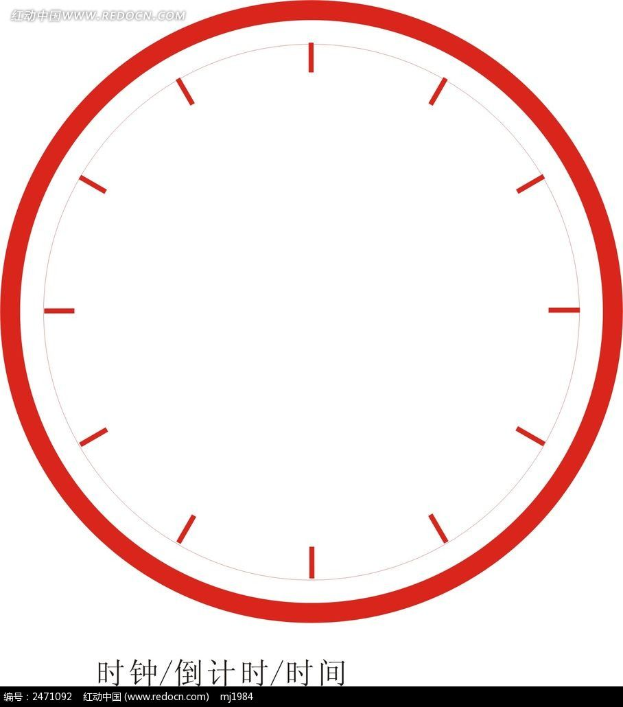

<!DOCTYPE html>
<html lang="en">

<head>
  <meta charset="UTF-8">
  <meta name="viewport" content="width=device-width, initial-scale=1.0">
  <meta http-equiv="X-UA-Compatible" content="ie=edge">
  <title>Document</title>
  <style>
    /* *{
      margin: 0;
      padding: 0;
    }
    html,body {
      width: 100%;
      height:;
    }
   */

    #myCanvas {
      border: 1px solid black;
      display: block;
      margin: 0 auto;
    }
  </style>
</head>

<body>


  <div class="wrap">
    <canvas id="myCanvas" width="500" height="500"></canvas>
  </div>
  <!--  -->

  <video src="./back//shape of you.mp3" id="video"></video>
 
  <!-- <button id="btn">btn</button> -->


  <script>
    var myCanvas = document.getElementById('myCanvas');
    var imgs = document.getElementById('imgs');
    var api = myCanvas.getContext('2d');
    var video =  document.querySelector('#video');

    // btn.onclick = function() {
    //   video.play()
    // }

    // imgs.onload = function() {
    //   api.drawImage(imgs, 0, 0, 500, 500);
    // }
   

    /* 
     1. 刻度  60 12 4
     2. 秒  分 时 （判断） 
    */

    // setTimeout(() => {
    //   video.play()
    // } , 3000)

    setInterval(drawclock, 1000)
    var x = 250, y = 250;
    var deg = Math.PI / 180;


    function drawclock() {
      api.clearRect(0, 0, 500, 500);
      var today = new Date();

      var min = today.getMinutes();
      var second = today.getSeconds();
      var hours = today.getHours();
      hours = hours + min / 60;
      hours > 12 ? hours = hours - 12 : hours;

      // 外圆
      api.save();
      api.beginPath();
      api.translate(x, y);
      api.arc(0, 0, 150, 0, Math.PI * 2);
      api.stroke();
      api.restore();

      // 60 刻度
      for (var i = 0; i < 60; i++) {
        api.save();
        api.beginPath();
        api.translate(x, y);
        api.rotate(i * deg * 6);
        api.moveTo(0, 140);
        api.lineTo(0, 150);
        api.stroke();
        api.restore();
      }

      for (var i = 0; i < 12; i++) {
        api.save();
        api.beginPath();
        api.translate(x, y);
        api.rotate(i * deg * 30);

        var index = i;
        createText(index === 0 ? index = 12 : i, 0, -120)

        api.moveTo(0, 135);
        api.lineTo(0, 150);
        api.lineWidth = 2;
        api.strokeStyle = 'red'
        api.stroke()
        api.restore();
      }
      for (var i = 0; i < 4; i++) {
        api.save();
        api.beginPath();
        api.translate(x, y);
        api.rotate(i * deg * 90);
        api.moveTo(0, 130);
        api.lineTo(0, 150);
        api.lineWidth = 3;
        api.strokeStyle = 'navy';
        api.stroke();
        api.restore();
      }

      // 秒针；
      api.save();
      api.beginPath();
      api.translate(x, y);
      api.rotate(second * deg * 6);
      api.moveTo(0, -120);
      api.lineTo(0, 20);
      api.lineWidth = 1;
      api.strokeStyle = 'red';
      api.stroke();
      api.restore();

      // fen针；
      api.save();
      api.beginPath();
      api.translate(x, y);
      api.rotate(min * deg * 6);
      api.moveTo(0, -110);
      api.lineTo(0, 20);
      api.lineWidth = 2;
      api.strokeStyle = 'navy'
      api.stroke()
      api.restore();

      // 时针；
      api.save();
      api.beginPath();
      api.translate(x, y);
      api.rotate(hours * deg * 30);
      api.moveTo(0, -110);
      api.lineTo(0, 20);
      api.lineWidth = 3;
      api.strokeStyle = 'blue'
      api.stroke()
      api.restore();
    }

    function createText(text, x, y) {
      api.font = '20px Arial';
      api.textAlign = 'center';
      api.textBaseline = 'middle';
      api.fillText(text, x, y);
    }


  </script>
</body>

</html>